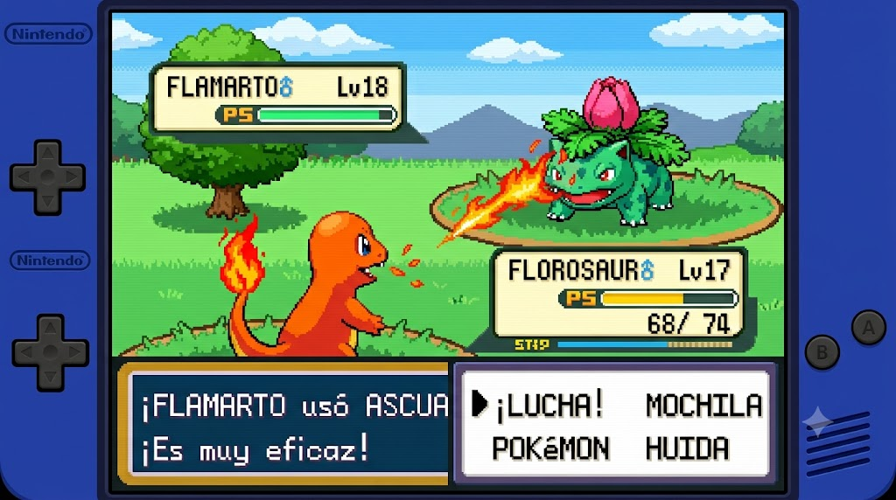
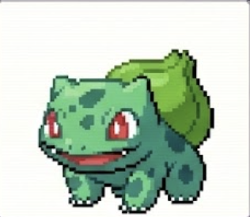
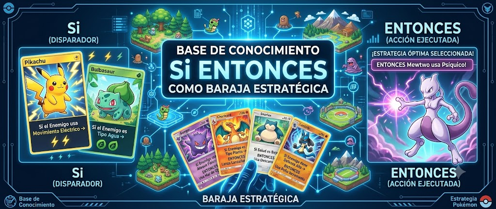
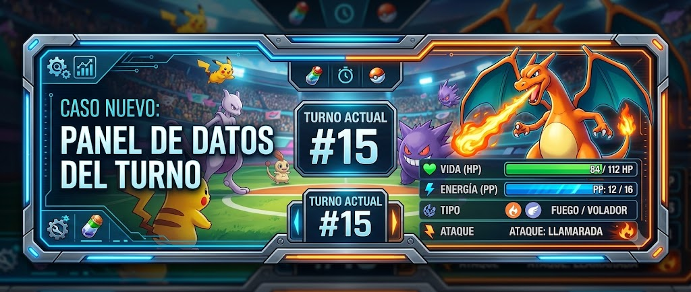
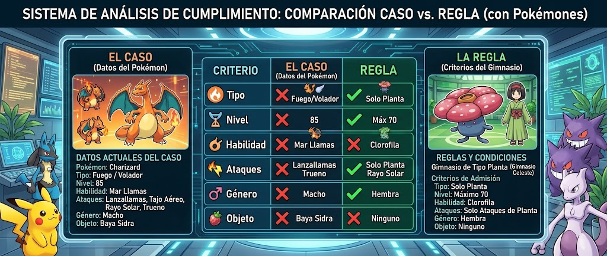
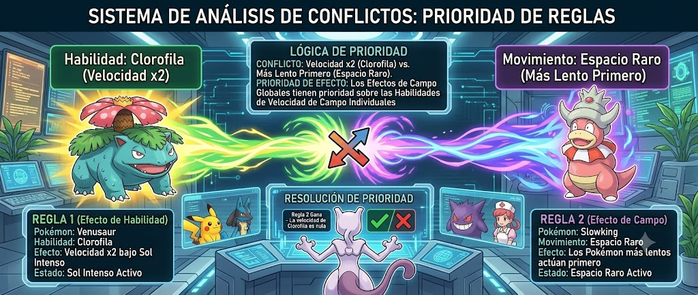

Aprende con una batalla guiada
Charm enfrenta a Bulbi. El agente debe decidir si ataca, se cura, se defiende o pide más datos.
Aprende cómo piensa un motor de inferencia con una batalla guiada y después aplica la misma lógica a tu propio agente.
Charm vs Bulbi será nuestro escenario de entrenamiento. No importa si tu proyecto final es una cafetería, un sistema médico, un recomendador escolar o un agente empresarial: el proceso de inferencia es el mismo.
Ejemplo educativo inspirado en combates por tipos estilo juegos de criaturas. Usa criaturas propias y no incluye logos, sprites, imágenes ni assets oficiales.

Primero vas a mirar cómo razona un agente en una batalla. Después usarás el mismo motor para probar tu propio proyecto.
Charm enfrenta a Bulbi. El agente debe decidir si ataca, se cura, se defiende o pide más datos.
Verás cómo el motor compara el caso contra reglas SI/ENTONCES, activa reglas candidatas y elige la mejor.
Al final cargarás la base de conocimiento que construiste en la Clase 10 y harás pruebas con tu agente real.
Este ejemplo usa criaturas y tipos para explicar el razonamiento. Después aplicarás la misma lógica a tu propio proyecto.
Este escenario servirá como laboratorio visual para entender cada parte del motor de inferencia antes de trabajar con tu propio agente.
Durante las primeras misiones usaremos siempre este escenario. El objetivo no es hacer un juego, sino ver el razonamiento del agente en acción.

Carga la batalla guiada y ejecuta el siguiente turno.
Qué estás aprendiendo. La base de conocimiento contiene las estrategias que el agente puede usar: atacar con ventaja, curarse, defenderse, usar ataque especial o pedir más datos.
Ejemplo. SI tipo_ataque = fuego Y tipo_enemigo = planta ENTONCES usar_ataque_fuego.
Conexión. Esta regla no ataca por sí sola. Solo está guardada. El motor de inferencia será quien la use cuando el caso coincida.

SI tipo_ataque = fuego Y tipo_enemigo = planta ENTONCES usar_ataque_fuego
Aquí ocurre el razonamiento del agente: el motor lee el estado de batalla, compara reglas, activa estrategias y decide qué acción ejecutar.
Las reglas son conocimiento. El motor de inferencia es quien las usa para pensar.
El agente observa vida, energía, tipo enemigo y ataque disponible.
Cada regla se revisa condición por condición.
Solo pasan las reglas cuyas condiciones coinciden con el caso.
Si varias reglas aplican, gana la más importante.
El agente selecciona atacar, curarse, defender o pedir más datos.
El agente muestra qué regla usó y por qué.
Un motor de inferencia es el mecanismo que aplica conocimiento a una situación nueva.
Sirve para que el agente no responda al azar. Cada decisión debe salir de una regla, una prioridad o una respuesta de respaldo.
Conecta la base de conocimiento, el caso nuevo, las reglas activadas, la decisión, la explicación y el código que después se llevará a Colab.
Evita que el agente solo sea una lista estática de reglas. Lo convierte en un sistema que razona paso a paso.
Guarda reglas, excepciones y respaldo.
SI tipo_ataque = fuego Y tipo_enemigo = planta ENTONCES usar_ataque_fuego
Usa esas reglas para decidir en un caso nuevo.
Charm observa a Bulbi. Activa R2. Decide usar ataque de fuego.
Charm no usa fuego porque sí. El motor primero revisa el estado del turno. Después compara ese estado contra la base de conocimiento. Cuando encuentra que tipo_ataque = fuego y tipo_enemigo = planta, activa la regla R2. Esa regla recomienda usar_ataque_fuego y explica que fuego tiene ventaja contra planta.
Presiona “Ver cómo piensa el motor” para ver la traza.
Qué estás aprendiendo. El caso nuevo no es una historia completa; es una fotografía del momento actual del combate.
Ejemplo. vida_jugador = alta, tipo_ataque = fuego, tipo_enemigo = planta, energia = media.
Cómo se ve en la batalla. Charm no decide en abstracto: decide con datos del turno actual contra Bulbi.

{}
Qué estás aprendiendo. Una regla aplica cuando todas sus condiciones coinciden con el caso.
R2 aplica porque. tipo_ataque = fuego y tipo_enemigo = planta.
Por qué importa. Esto evita decisiones arbitrarias: el agente debe demostrar qué condiciones cumplió.

El motor no elige una regla al azar. Primero revisa toda la base de conocimiento y separa las reglas que coinciden del resto.
Qué aprenderás. Aprenderás a ver la diferencia entre una regla existente y una regla activada.
Por qué importa. Un agente puede tener muchas reglas, pero solo algunas aplican al estado actual. Esta separación permite razonar con claridad.
En la batalla se ve así. Charm tiene varias estrategias posibles, pero en este turno solo se activan las reglas cuyas condiciones coinciden con su vida, energía, tipo de ataque y tipo enemigo.
Qué estás aprendiendo. Cuando varias reglas aplican, el agente necesita decidir cuál tiene mayor peso.
En batalla. Si Charm tiene vida baja y también tiene ventaja elemental, compiten curarse y atacar con fuego.
Resultado. La prioridad decide: sobrevivir puede ganar sobre atacar.

Qué estás aprendiendo. El agente no debe inventar cuando ninguna regla aplica.
En batalla. Si falta tipo_enemigo o ataque_disponible, Charm no debería atacar al azar.
Resultado. El respaldo permite pedir más datos en lugar de fabricar una respuesta.
Ya viste cómo el motor decidió en una batalla. Ahora usarás la misma lógica con el JSON que construiste en la Clase 10.
Tu proyecto no necesita ser de batalla. Puede ser una cafetería, un agente escolar, un recomendador, un sistema de riesgo o cualquier problema que hayas trabajado. Lo importante es que tu JSON tenga reglas, condiciones, resultados y explicaciones.
Carga tu base de conocimiento de la Clase 10 y usa el motor de inferencia para evaluar casos reales de tu proyecto.
Esta zona ya no depende de Charm ni Bulbi. Aquí el motor trabaja con las variables de tu JSON.
Sube o pega el JSON que generaste en la Clase 10. La página revisará si tus reglas pueden ser usadas por el motor.
Un caso de prueba es una situación que tu agente debe resolver usando sus reglas. Los campos se crean con las variables detectadas en tu JSON.
{}
El motor comparará tu caso contra todas las reglas de tu base de conocimiento, sin asumir variables de batalla.
Copia el código y pruébalo con tu propio JSON en un notebook.
Carga tu JSON para generar código genérico.
Documenta qué base cargaste, qué casos probaste, qué reglas se activaron y qué aprendiste.
Carga tu JSON y ejecuta inferencia para generar evidencia.
Convierte tu JSON de la Clase 10 en un notebook funcional: carga reglas, crea casos de prueba, ejecuta inferencia y explica las decisiones de tu agente.
En esta parte ya no usamos Charm vs Bulbi. Ahora el motor trabaja con tu propia base de conocimiento.
Vas a crear un notebook donde tu agente pueda leer la base de conocimiento que construiste en la Clase 10. Después escribirás casos nuevos y el motor decidirá qué regla aplica, qué regla gana y qué respuesta debe dar.
A. Base de conocimiento JSON. Es el archivo generado en la Clase 10. Debe tener reglas con id, tipo, prioridad, condiciones, resultado, explicación y confianza.
{
"id": "R1",
"tipo": "normal",
"prioridad": "media",
"condiciones": { "variable": "valor" },
"resultado": { "accion_recomendada": "..." },
"explicacion": "...",
"confianza": "alta"
}
B. Casos de prueba. Son situaciones nuevas que tu agente debe resolver. El caso debe usar las mismas variables que aparecen en las condiciones del JSON.
{
"clima": "calor",
"gusto": "dulce",
"hambre": "baja",
"presupuesto": "medio"
}
El motor no interpreta lenguaje libre. Compara valores. Si tu regla dice clima = calor, tu caso también debe escribir clima = calor. Si escribes “caluroso”, la regla no coincidirá a menos que tu base contemple ese valor.
El botón principal genera Python usando el JSON, reglas, caso actual y casos guardados del alumno.
Qué estás aprendiendo. Un agente debe probarse con varios casos, no con uno solo.
Por qué importa. Una regla puede funcionar en un caso y fallar en otro.
Cómo se ve en la batalla. Cada turno probado se clasifica como resuelto, respaldo, conflicto o error.
Qué debe hacer el alumno. Registrar el caso actual y repetir con variantes.
Qué produce esta misión. Historial de pruebas con clasificación y regla ganadora.
Qué estás aprendiendo. El reporte demuestra que construiste y probaste un motor, no solo viste teoría.
Por qué importa. La evidencia permite explicar decisiones, fallos, conflictos y respaldo.
Cómo se ve en la batalla. El log del turno se convierte en documentación técnica del agente.
Qué debe hacer el alumno. Escribir reflexión, generar reporte y descargar evidencia.
Qué produce esta misión. Reporte con base, caso Charm vs Bulbi, ganadora, no aplicadas, pruebas, conflicto, respaldo y reflexión.
Genera el reporte para verlo aquí.